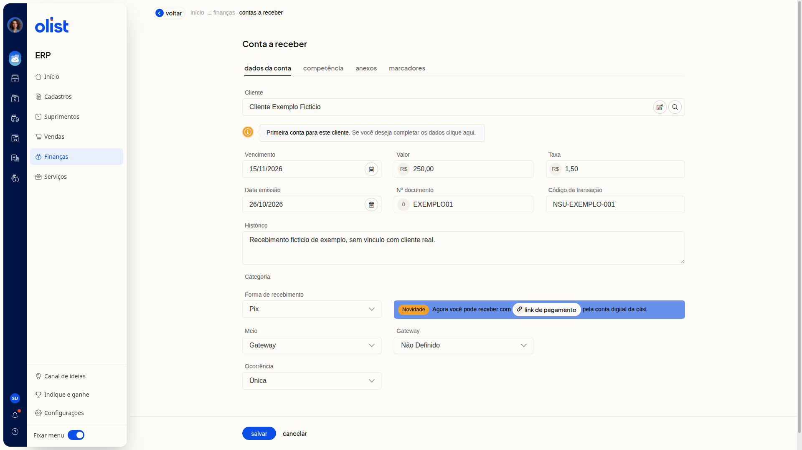

Como incluir uma conta a receber
Descrição
No ERP da Olist, você inclui uma conta a receber pela tela ou por planilha. Pela tela, o formulário reúne os dados da conta, a competência, o anexo e os marcadores. Por planilha, você importa os lançamentos com o arquivo de layout.
Acesse Finanças > Contas a Receber. Na lista, use Incluir conta a receber ou Mais ações > Importar lançamentos de uma planilha.
Pré-requisitos
- Você precisa de acesso ao menu Finanças no ERP.
- Você precisa da permissão de Contas a receber para acessar a tela.
- Você precisa da permissão para incluir em Contas a receber para usar Incluir conta a receber.
- Para importar por planilha, você precisa da permissão de importação de registros e da permissão para incluir e editar em Contas a receber.
- O cliente não precisa já estar cadastrado. Um nome não encontrado pode ser informado, e a tela avisa que é a primeira conta desse cliente.
Importante
- Nenhum campo do formulário é obrigatório.
- Na aba Anexos, o arquivo é limitado a 2Mb.
- Para anexar um arquivo, a empresa precisa ter espaço de armazenamento disponível.
- O link de pagamento pela Conta Digital da Olist no formulário depende de a empresa poder emitir esse link.
- O aviso da conta digital no formulário só aparece se a forma de recebimento for link de pagamento com a conta digital configurada, ou se o meio de recebimento for a Conta Digital da Olist.
Instruções
Pela tela
-
Acesse Finanças > Contas a Receber.

-
Clique em Incluir conta a receber.
Dados da conta
- Informe Cliente. Pesquise pelas iniciais do nome, pelo CPF/CNPJ ou pelo email. Se precisar, clique em Pesquisar contato ou em Visualizar dados do fornecedor.
- Leia o aviso Primeira conta para este cliente. Se você deseja completar os dados clique aqui. se o nome não estiver cadastrado.
- Informe Vencimento no formato DD/MM/AAAA.
- Informe Valor em reais, com vírgula decimal.
- Informe Data emissão no formato DD/MM/AAAA.
- Informe Nº documento.
- Informe Histórico. Esta informação será exibida no link de pagamento.
- Selecione a Forma de recebimento. A lista inicia em Selecione. As opções incluem:
- Dinheiro
- Cartão de crédito
- Cartão de débito
- Boleto
- Cheque
- Depósito
- Crediário
- Vale-troca
- Pix
- Meli
- Crypto - Bitcoin
- Mercado pago
- Cashback
- Vale-presente
- outras formas cadastradas na conta
Campos ao selecionar Pix
- Ao selecionar Pix, informe Taxa em reais, com vírgula decimal.
- Informe Código da transação com o NSU ou o id da transação.
- Selecione Meio como Banco ou Gateway.
- Selecione Gateway. As opções são Não Definido e os gateways cadastrados.

Ocorrência
- Selecione a Ocorrência. A ocorrência padrão é Única. As opções são Única, Semanal, Quinzenal, Mensal, Trimestral, Semestral, Anual e Parcelada.
- Use o botão link de pagamento se o formulário mostrar o aviso Novidade. Agora você pode receber com link de pagamento pela conta digital da olist.
Competência
- Abra a aba Competência e use as setas de Competência para escolher o mês.
Anexos
- Abra a aba Anexos e clique em Procurar arquivo para enviar um arquivo de até 2Mb.
Marcadores
- Abra a aba Marcadores e informe os marcadores separados por vírgula ou tab. O texto vira etiquetas.
- Revise os dados e clique em Salvar para gravar a conta. Para descartar o preenchimento, clique em Cancelar.
Por planilha
-
Acesse Finanças > Contas a Receber.
-
Clique em Mais ações.

-
Clique em Importar lançamentos de uma planilha.

-
Clique em Download do arquivo de layout para baixar o modelo.
-
Preencha a planilha. O exemplo traz as colunas ID, Cliente, Data Emissão, Data Vencimento, Data Liquidação, Valor documento, Saldo, Situação, Número documento, Número no banco, Categoria e Histórico.
-
Selecione o arquivo e clique em Prosseguir com a importação.
Links relacionados
Fale com o suporte se precisar de ajuda para incluir a conta a receber.